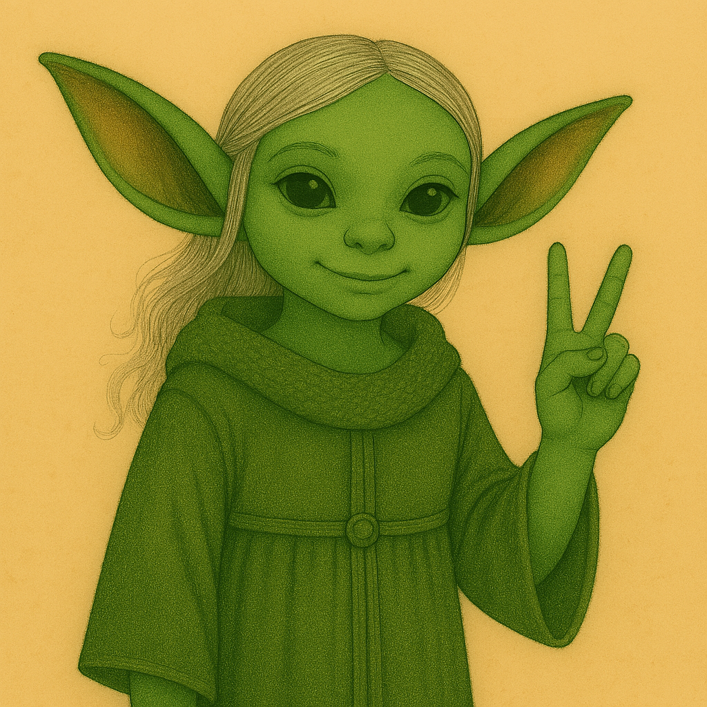

Paul L. Bailey, Ph.D.
Videos
Quote of the στιγμή

"Seeing is deceiving." -
Yodita
Symmetric Difference Youtube Channel
Windmills of Your Mind
My Love
Life of Love (Vocal)
Life of Love (Piano)
Thumper
Seeds of Growth (Malte Marten)